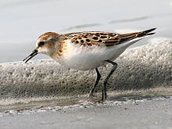
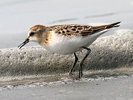

| Little Stint | |
|---|---|
|  | |
| Adult in September | |
| Conservation status | |
| Binomial name | |
| Calidris minuta Leisler, 1812 |
|
| Synonyms | |
|
Erolia minuta |
| Little Stint | |
|---|---|
|  | |
| Adult in September | |
| Conservation status | |
| Binomial name | |
| Calidris minuta Leisler, 1812 |
|
| Synonyms | |
|
Erolia minuta |
The Little Stint, Calidris minuta (or Erolia minuta), is a very small wader. It breeds in arctic Europe and Asia, and is a long-distance migrant, wintering south to Africa and south Asia. It occasionally is a vagrant to North America and to Australia. It is gregarious in winter, sometimes forming large flocks with other Calidris waders, particularly Dunlin, on coastal mudflats or the edges of inland pools.
The numbers of this species (and of Curlew Sandpiper) depend on the population of lemmings. In poor lemming years, predatory species such as skuas and Snowy Owls take Arctic-breeding waders instead.
Its small size, fine dark bill, dark legs and quicker movements distinguish this species from all waders except the other dark-legged stints. It can be distinguished from these in all plumages by its combination of a fine bill tip, unwebbed toes and long primary projection. The call is a sharp "stit",
_W3_IMG_6891.jpg)
The breeding adult has an orange wash to the breast, a white throat and a strong white V on its back. In winter plumage identification is difficult. Juveniles have pale crown stripes and a pinkish breast.
This bird nests on a scrape in bare ground, laying 3–5 eggs. It is polygamous, and male and female may incubate separate clutches.
Food is small invertebrates picked off the mud.
The Little Stint is one of the species to which the Agreement on the Conservation of African-Eurasian Migratory Waterbirds (AEWA) applies.
An apparent hybrid between this species and Temminck's Stint has been reported from the Netherlands.[2]

_(1).jpg){kind=link}
_2.jpg){kind=link}